|
Tinker-HP v1.3
|
|
Tinker-HP v1.3
|
Go to the source code of this file.
Functions/Subroutines | |
| subroutine | dcinduce_pme |
| solve the polarization equations with a DC/JI-DIIS algorithm, driver More... | |
| subroutine | inducedc_pme (matvec, nrhs, dodiis, ef, mu, murec) |
| solve the polarization equations with a DC/JI-DIIS algorithm, solver itself More... | |
| subroutine | pc_dc_efld0_direct (nrhs, ef) |
| Compute the direct space contribution to the permanent electric field. Also compute the "p" field, which is used to compute the energy according to the AMOEBA force field. More... | |
| subroutine | dc_factor |
| Compute the direct space contribution to the electric field due to the current value of the induced dipoles. More... | |
| subroutine | pc_dc_tmatxb_pme (nrhs, dodiag, mu, efi) |
| subroutine | otf_dc_tmatxb_pme (nrhs, dodiag, mu, efi) |
| Compute the direct space contribution to the electric field due to the current value of the induced dipoles. More... | |
| subroutine | otf_dc_efld0_direct (nrhs, ef) |
| Compute the direct space contribution to the permanent electric field. Also compute the "p" field, which is used to compute the energy according to the AMOEBA force field. More... | |
| subroutine | commfield2 (nrhs, ef) |
| communicate some direct fields (Newton's third law) More... | |
| subroutine | commfield2short (nrhs, ef) |
| communicate some direct fields (Newton's third law) More... | |
| subroutine commfield2 | ( | integer | nrhs, |
| real*8, dimension(3,nrhs,*) | ef | ||
| ) |
communicate some direct fields (Newton's third law)
| no | params |
Definition at line 2353 of file dcinduce_pme.f90.
References dc_factor().
Referenced by dcinduce_pme(), and dcinduce_pme2().
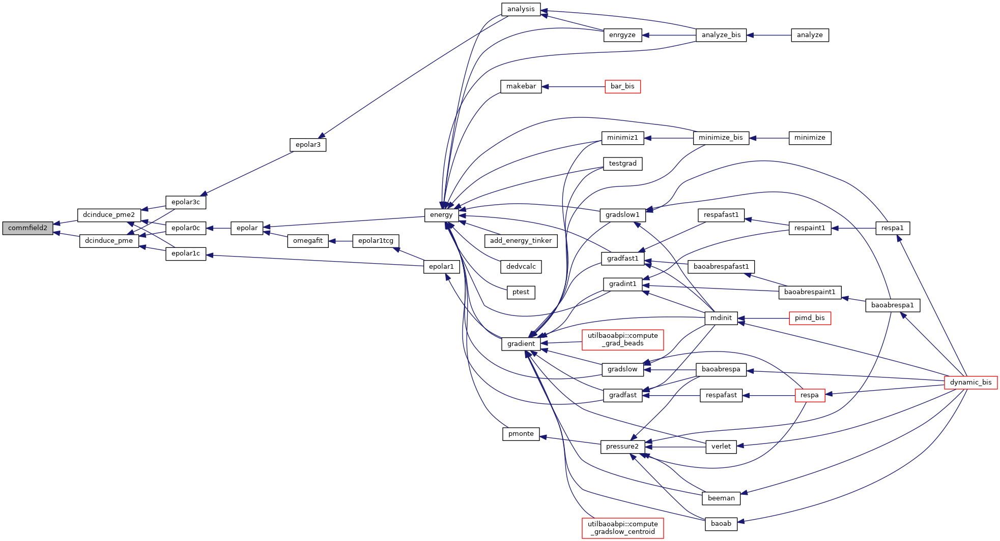
| subroutine commfield2short | ( | integer | nrhs, |
| real*8, dimension(3,nrhs,*) | ef | ||
| ) |
communicate some direct fields (Newton's third law)
| no | params |
Definition at line 2425 of file dcinduce_pme.f90.
References dc_factor().
Referenced by dcinduce_shortreal().
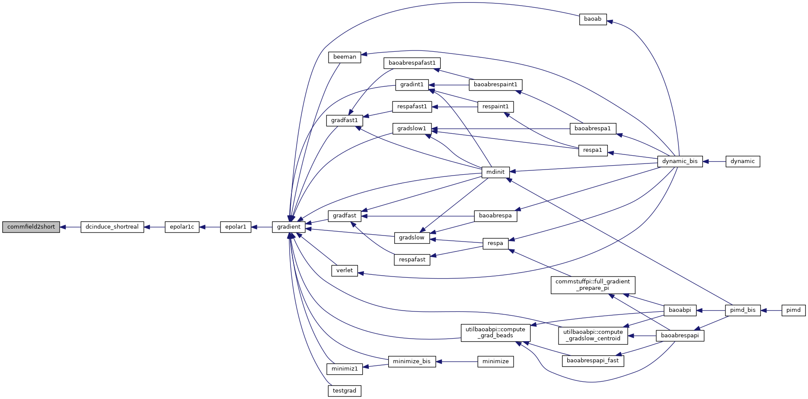
| subroutine dc_factor | ( | ) |
Compute the direct space contribution to the electric field due to the current value of the induced dipoles.
| no | params |
Definition at line 1261 of file dcinduce_pme.f90.
Referenced by commfield2(), and commfield2short().
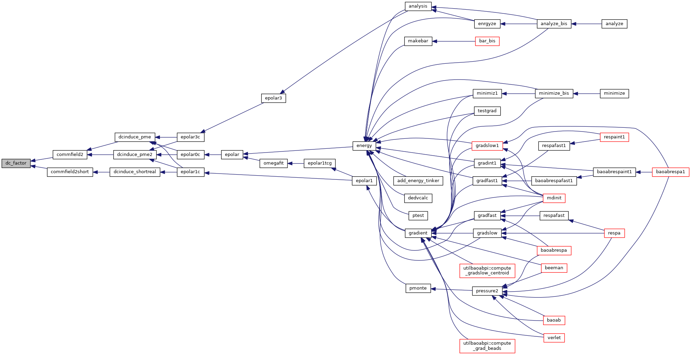
| subroutine dcinduce_pme | ( | ) |
solve the polarization equations with a DC/JI-DIIS algorithm, driver
| no | params |
Definition at line 18 of file dcinduce_pme.f90.
References cluster1(), cluster2(), commdirdir(), commfield2(), commrecdirdip(), commrecdirfields(), efld0_recip(), inducedc_pme(), otf_dc_efld0_direct(), otf_dc_tmatxb_pme(), pc_dc_efld0_direct(), pc_dc_tmatxb_pme(), and ulspred().
Referenced by epolar0c(), epolar1c(), and epolar3c().
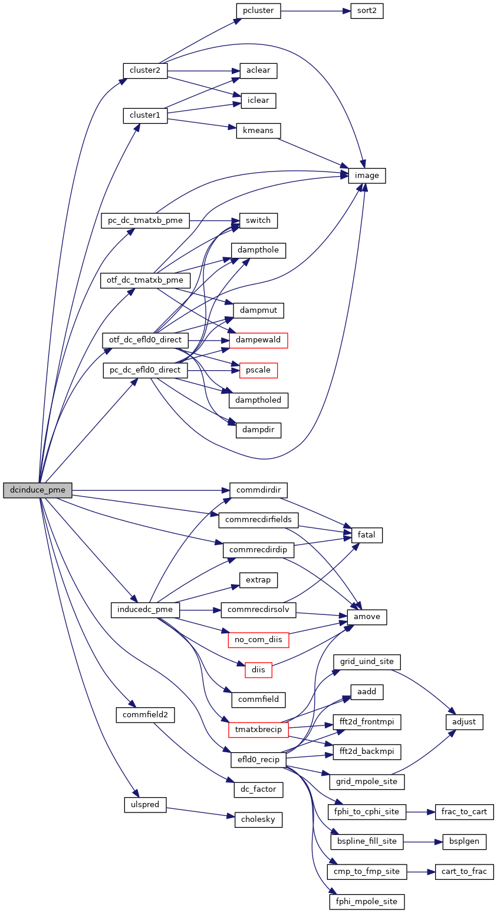
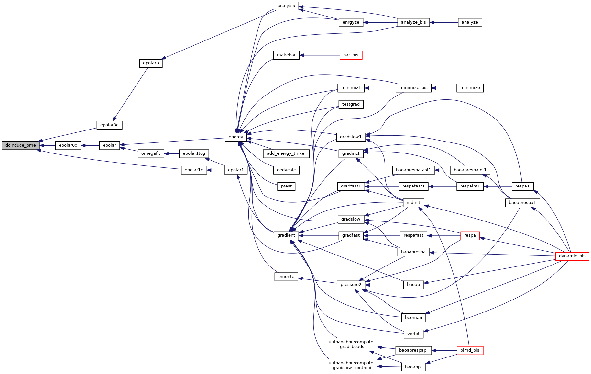
| subroutine inducedc_pme | ( | external | matvec, |
| integer | nrhs, | ||
| logical | dodiis, | ||
| real*8, dimension(3,nrhs,*) | ef, | ||
| real*8, dimension(3,nrhs,*) | mu, | ||
| real*8, dimension(3,nrhs,*) | murec | ||
| ) |
solve the polarization equations with a DC/JI-DIIS algorithm, solver itself
| [in] | matvec,: | matrix-vector product routine |
| [in] | nrhs,: | number of right hand side vectors |
| [in] | dodiis,: | use DIIS extrapolation or not |
| [in] | ef,: | right hand side (permanent electric field) |
| [in] | mu,: | solution vector (part corresponding to local domain in direct space) |
| [in] | murec,: | solution vector (part corresponding to local domain in recip space) |
Definition at line 335 of file dcinduce_pme.f90.
References commdirdir(), commfield(), commrecdirdip(), commrecdirsolv(), diis(), extrap(), no_com_diis(), and tmatxbrecip().
Referenced by dcinduce_pme().
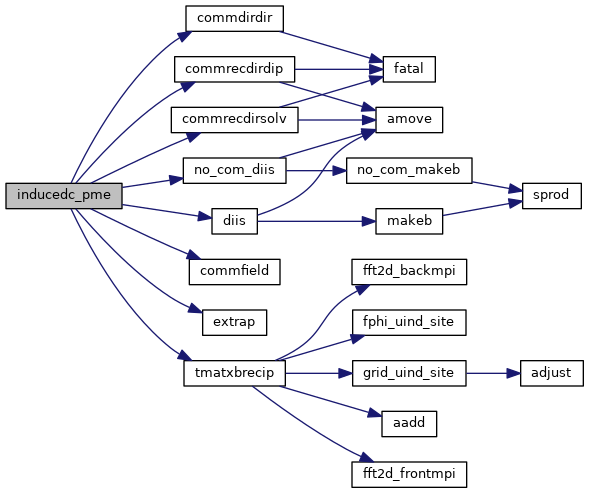
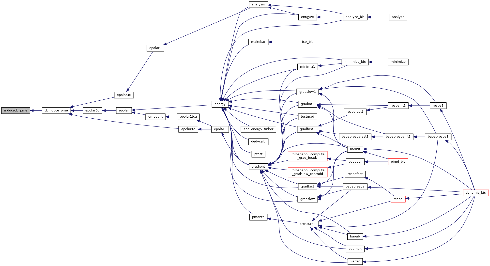
| subroutine otf_dc_efld0_direct | ( | integer | nrhs, |
| real*8, dimension(3,nrhs,npolebloc) | ef | ||
| ) |
Compute the direct space contribution to the permanent electric field. Also compute the "p" field, which is used to compute the energy according to the AMOEBA force field.
| no | params |
Definition at line 1765 of file dcinduce_pme.f90.
References dampdir(), dampewald(), dampmut(), dampthole(), damptholed(), image(), pscale(), and switch().
Referenced by dcinduce_pme(), dcinduce_pme2(), and dcinduce_shortreal().
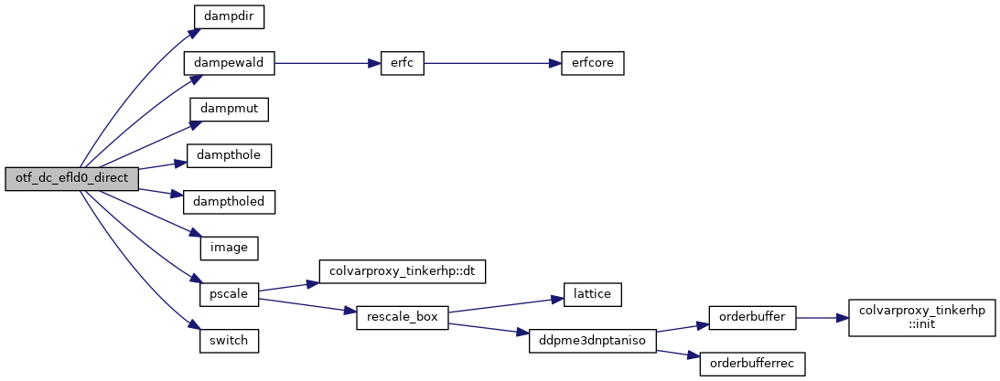
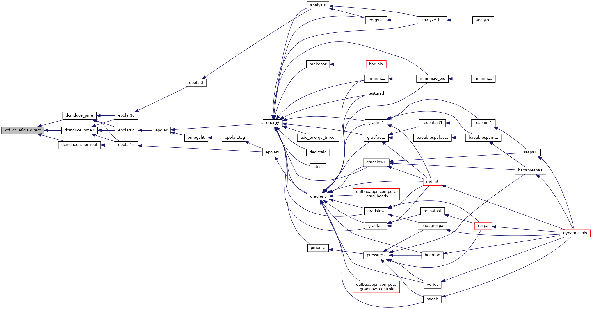
| subroutine otf_dc_tmatxb_pme | ( | integer | nrhs, |
| logical | dodiag, | ||
| real*8, dimension(3,nrhs,*) | mu, | ||
| real*8, dimension(3,nrhs,npolebloc) | efi | ||
| ) |
Compute the direct space contribution to the electric field due to the current value of the induced dipoles.
| no | params |
Definition at line 1474 of file dcinduce_pme.f90.
References dampewald(), dampmut(), dampthole(), image(), and switch().
Referenced by dcinduce_pme(), dcinduce_pme2(), and dcinduce_shortreal().
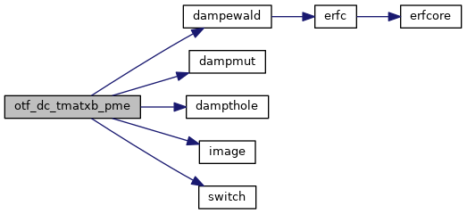
| subroutine pc_dc_efld0_direct | ( | integer | nrhs, |
| real*8, dimension(3,nrhs,npolebloc) | ef | ||
| ) |
Compute the direct space contribution to the permanent electric field. Also compute the "p" field, which is used to compute the energy according to the AMOEBA force field.
| no | params |
Definition at line 655 of file dcinduce_pme.f90.
References dampdir(), dampewald(), dampmut(), dampthole(), damptholed(), image(), pscale(), and switch().
Referenced by dcinduce_pme(), dcinduce_pme2(), and dcinduce_shortreal().
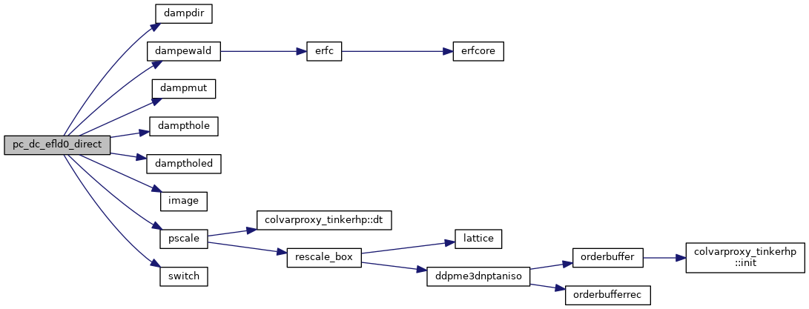
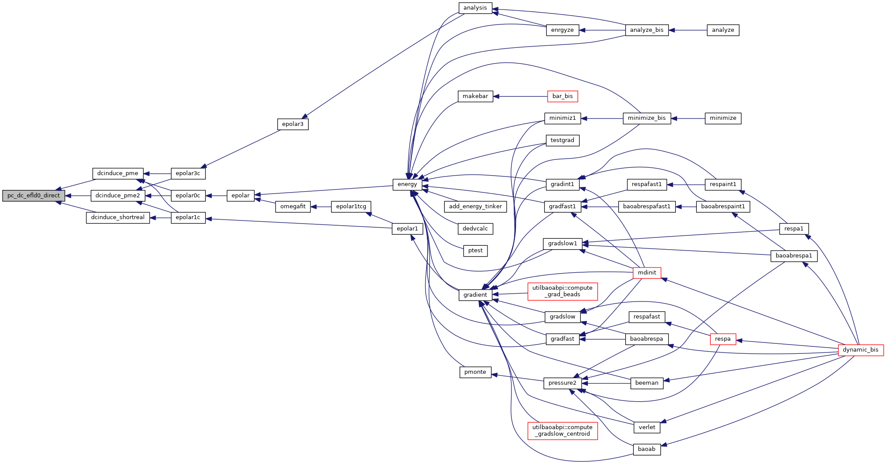
| subroutine pc_dc_tmatxb_pme | ( | integer | nrhs, |
| logical | dodiag, | ||
| real*8, dimension(3,nrhs,*) | mu, | ||
| real*8, dimension(3,nrhs,npolebloc) | efi | ||
| ) |
Definition at line 1288 of file dcinduce_pme.f90.
References image(), and switch().
Referenced by dcinduce_pme(), dcinduce_pme2(), and dcinduce_shortreal().
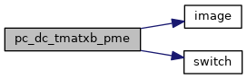
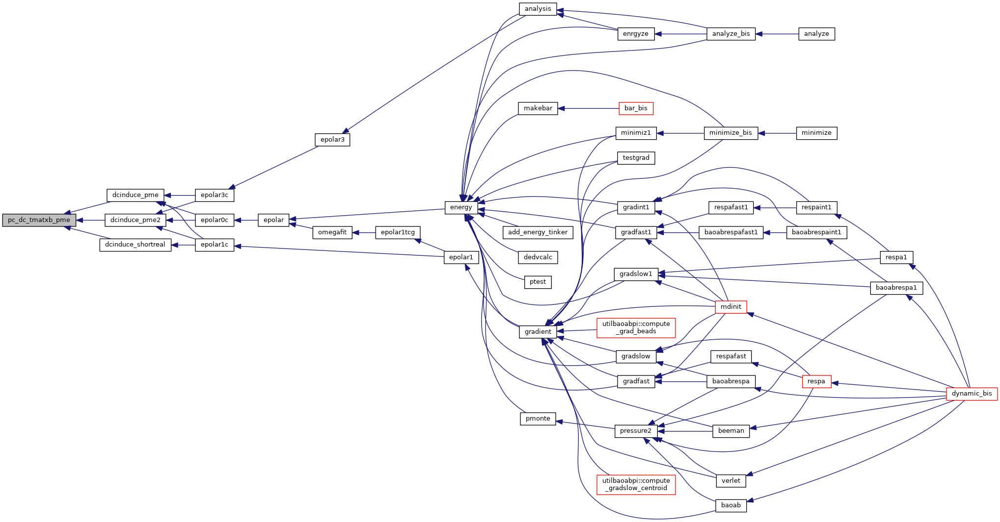
 1.8.5
1.8.5